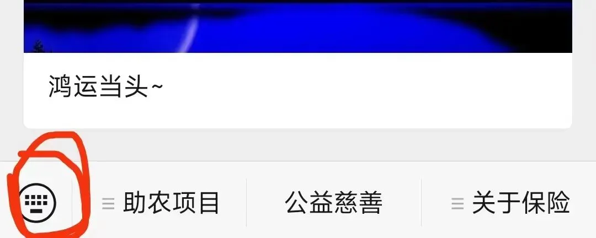
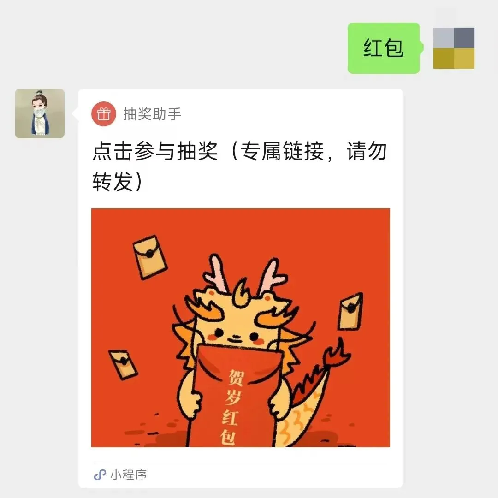

鸿运当头
本地阅读 · 正文与留言保留原文
助农项目95折最后一天了，需要的看看： 天叙小馆 ，明天下午2点截单，打烊。
写下今年度最后这短篇，我就准备放假了，公司的员工今天开始放假，我也想休息了，去走走看看，预计2月底恢复更新。
春节前给读者们发红包这事，做了两年，去年断了一年（改成发新疆大枣），今年继续恢复发红包。
准备了 500份红包，每份100元 ，共50000元 。我很喜欢广东的习俗，总发点红包，金额不大，讲究个“利是”，利是红包，重在参与。 “利是”是“利事”的谐音，有“事事顺利”的寓意 ，是我对读者的一份祝福。
按之前的说法，是2024年1月24日之前关注的读者才能抽奖，想想今年还是不这么搞了，对后来的读者也不公平，一起乐乐吧，所以今年只要是关注的读者都能参与。
咱们关起门来搞抽奖就行，不要到处转发了，没意义，中奖率也低。
开奖时间，定在星期日，也就是2月4日20时24分 。
** 天玑的“利是”红包 ** ** （戳，根据提示操作） ** ，或直接 在公众号菜单栏上输入“红包”二字 ，即可参与抽奖，如下图， 点红圈内的符号 ，然后输入“红包”：

就会有下图这个界面，然后点链接，就可以抽奖了：

就这样吧，祝大家有个愉快的春 节假期
按日期浏览全部来源（同日按条目标识排序）
查看原始网页 ↗（需联网）保存于 2026-10-04
回到页首 ↑